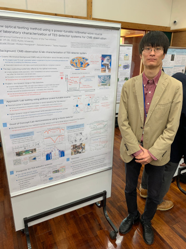
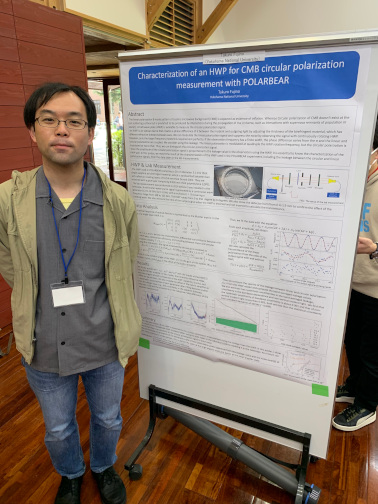
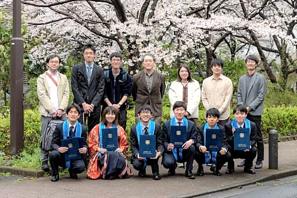
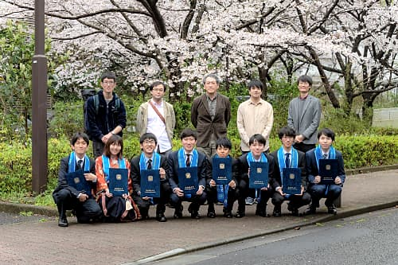
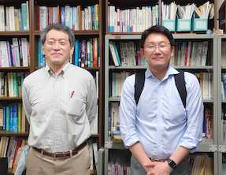
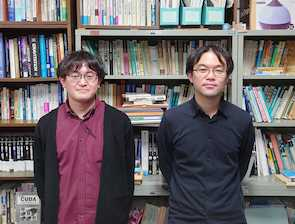

Update : 7 Jan. 2023
Update : 7 Jan. 2023中村研ニュース（2022年度）
更新中です．．．
D3の藤野と廣瀬が国際会議でポスター発表［2023年3月］
3月27日（月）から30日（木）まで，国際会議“International Conference on the Physics of the Two Infinities”が京都大学の益川ホールで開催され，初日と2日目に博士課程後期３年の藤野と廣瀬がポスター発表しました。藤野の発表のタイトルは“Characterization of an HWP for CMB circular polarization measurement with POLARBEAR”，廣瀬の発表のタイトルが“New optical testing method using a power-tunable millimeter-wave source for laboratory characterization of TES detector systems for CMB observation”で，それぞれ共同研究で進めている宇宙マイクロ波背景放射観測実験の様々な解析で必要不可欠な基礎研究について報告し，有益な質疑応答が行われました。
修士生２名と学部生６名が修了・卒業［2023年3月］
  3月23日（木）に証書の授与式が行なわれ，中村研も修士生２名と学部生６名が無事に修了・卒業して学位が授与されました。 修了・卒業したメンバーは次の通りで，卒業した４年生のうち３人はそのまま進学して中村研に残ります。- 修士修了
- 小林 和哉，吉本 圭佑
- 学部卒業
- 山口 貴大，伊藤 由紘，柏﨑 未有，近藤 勇仁，佐藤 和樹，三浦 史弥
D2の谷山が日本物理学会で登壇［2023年3月］
3月22日（水）から25日（土）まで，日本物理学会2023年春季大会がオンラインで開催され，2日目の23日の午前中に博士課程後期２年の谷山がZoomで登壇しました。谷山の講演のタイトルは「液体キセノンの赤外発光の測定-10」で，中村研が共同研究で進めている液体キセノンの赤外発光の測定の解析について報告し，有益な質疑応答が行われました。
中村が東大宇宙線研共同利用研究成果発表会で講演［2023年2月］
2月21日（火），22日（水）に，東京大学宇宙線研究所の共同利用研究成果発表研究会がオンラインで開催され，中村も発表を依頼されて22日（水）の午前に講演を行ないました。講演のタイトルは「液体キセノンの近赤外発光の研究」で，表題の研究の最新の状況について報告しました。学部４年生の５人が卒論発表会で発表［2023年2月］
2月21日（火）に理工学部物理工学EPの卒論発表会が開かれ，中村研の学部４年生の５人が発表を行ないました。発表のタイトルは次の通りです。
◎伊藤 由紘：「冷却CCDカメラを用いた分光測光系によるフッ化カルシウムの紫外発光のスペクトル測定」◎柏﨑 未有：「機械学習を用いたXRISM衛星搭載極低温検出器の異常検知アルゴリズムの開発」
◎近藤 勇仁：「宇宙マイクロ波背景放射偏光観測衛星LiteBIRDの低周波望遠鏡の精密形状測定を実現する低温フォトグラメトリ法の研究」
◎佐藤 和樹：「液体キセノンの発光スペクトル測定のためのGeant4による強度較正のシミュレーション」
◎三浦 史弥：「宇宙マイクロ波背景放射偏光観測衛星LiteBIRDの低周波望遠鏡に用いる電波吸収体の特性評価」
M2の院生２名が修論発表会で発表［2023年2月］
2月14日（火），15日（水），16日（木）に理工学府数物・電子情報系理工学専攻物理工学教育分野の修論発表会が開かれ，14日（火）に中村研の博士課程前期２年の２名が発表を行ないました。発表のタイトルは次の通りです。
◎小林 和哉：「チェレンコフ光による冷却CCDカメラを用いた分光測光系の強度較正」◎吉本 圭佑：「CCDカメラを用いた分光測光系の真空紫外領域の波長較正」
M1の出石と中村が「放射線検出器とその応用」研究会で発表［2023年1月］
1月25日（水）〜27日（金）に第37回「放射線検出器とその応用」研究会（高エネルギー加速器研究機構放射線科学センターと応用物理学会・放射線分科会との共催）が高エネルギー加速器研究機構（つくば）とオンラインのハイブリッドで開催され，26日（木）に博士課程前期１年の出石と中村がそれぞれオンラインで発表しました。タイトルは，出石が「微弱なシンチレーション光の分光測定のためのγ線遮蔽の研究」，中村が「冷却CCDを用いた分光測光系によるシンチレータの微弱な発光の測定」で，高エネルギー加速器研究機構と共同で進めてきた，液体キセノンの赤外発光の測定のための技術開発について，これまでの研究経過と今後の展望について発表しました。次期４年生の仮配属［2023年1月］
1月下旬に，中村研の令和５年度の新卒研生として５人が仮配属されました。新年おめでとうございます［2023年1月］
コロナ禍の中，昨年も多くの皆様にいろいろとご支援頂き，どうも有難うございました。今年も引き続き宇宙素粒子実験に邁進します。液体キセノンに関しては，その特性を明らかにする世界的にユニークな研究を推進して，液体キセノンを大規模に用いる次世代の宇宙暗黒物質探索実験へ貢献します。
また，学生の一部は引き続き宇宙マイクロ波背景放射観測実験（POLARBEAR，LiteBIRD計画）に着実に貢献しつつあります。
これらのような中村研究室の研究活動を今後ともご支援下さい。
今年もどうぞよろしくお願い申し上げます。
大掃除，年忘れ［2022年12月］
12月26日（月）の午後に研究室の大掃除を行ない，年忘れとしました。【連絡】中村研に関心をお持ちの３年生へ［2022年12月］
本Web内の研究テーマの情報は古いものがありますが，現在も非常に忙しいため更新には時間が掛かりそうです。そこで，研究内容に関する最新の情報は，研究室に直接来てお確かめ下さい。また，前項に掲載している，４年前に作成した研究室の紹介パンフレット第２版もご参照下さい。 なお，以前から，卒研配属を考えている学部３年生へ向けたメッセージを載せています。>> メッセージのページ
【再掲】研究室の紹介パンフレット第２版［2022年12月］

 中村研究室の紹介パンフレット「宇宙素粒子物理学へのいざない」（京都工芸繊維大学大学院の宇都宮里梨子氏の全面的なご協力とデザインによる）が，若干手直しされて第２版になっています。なお，同じもののデジタル版もここに公開しています。対応するQRコードもご利用下さい。
中村研究室の紹介パンフレット「宇宙素粒子物理学へのいざない」（京都工芸繊維大学大学院の宇都宮里梨子氏の全面的なご協力とデザインによる）が，若干手直しされて第２版になっています。なお，同じもののデジタル版もここに公開しています。対応するQRコードもご利用下さい。
D2の谷山が日本物理学会2022年秋季大会で登壇［2022年9月］
9月6日（火）から8日（木）まで，日本物理学会2020年秋季大会（素核宇）が岡山理科大で開催され，博士課程後期２年の谷山が初日の6日に登壇しました。講演のタイトルは，「液体キセノンの赤外発光の測定-9」で，中村研が共同研究で進めている液体キセノンの赤外発光を測る研究の最終準備について報告しました。
【３年生への連絡】秋学期のプレゼンテーション演習の課題［2022年8月］
中村研でのプレゼンテーション演習の課題ですが，別ページに過去の発表題目の一覧を掲載していますので，参考にして下さい。なお，事前に相談したい３年生の方が居られれば，個別にご連絡下さい。相談に乗ります。OBの宮本健司氏が来訪［2022年5月］
5月27日（金）に，中村研OBの宮本健司氏（現・ニコン）が来訪しました。OBの高久諒太氏が来訪［2022年4月］
4月22日（金）に，中村研OBの高久諒太氏（現・東京大学大学院理学系研究科博士課程）が来訪しました。４名が大学院に進学し，５名が卒研配属しました［2022年4月］
2022年度がスタートし，新Ｍ１の４人と新４年生５人が研究室に配属されました。- 出石 汐里（M1）
- 熊崎 慎太朗（M1）
- 郷原 康司（M1）
- 森 拓理（M1）
- 伊藤 由紘（B4）
- 柏﨑 未有（B4）
- 近藤 勇仁（B4）
- 佐藤 和樹（B4）
- 三浦 史弥（B4）